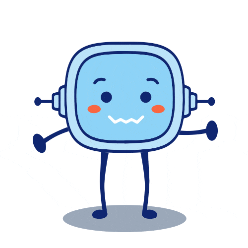
Tras haber analizado el trabajo que debes realizar, vamos a ver si conoces Scratch. ¿Has utilizado su interfaz?. Pero si no es así, no te preocupes ya que empezaremos desde cero.
Precisamente en este apartado vamos a explorar Scratch, iras conociendo sus bloques de código, los objetos y entorno de programación.
Estoy seguro que vas a disfrutar explorando, ya has visto la cantidad de cosas divertidas que puedes hacer con él.
¿Comenzamos?
Recordamos: los lenguajes de programación
Para que los ordenadores puedan entender y realizar las tareas que les pedimos, necesitamos comunicarnos con ellos en un idioma que ellos entiendan. Este «idioma» es lo que llamamos un lenguaje de programación.
Cuando escribimos una serie de instrucciones usando un lenguaje de programación, creamos un programa informático. Es como escribir una guía paso a paso que el ordenador seguirá para hacer lo que queremos.
Existen diferentes tipos de lenguajes de programación, pero vamos a centrarnos en dos principales: los lenguajes textuales y los lenguajes visuales.
Lenguajes textuales
Los lenguajes textuales utilizan palabras y símbolos escritos para dar instrucciones al ordenador. Tienen sus propias reglas y formas de escribir, un poco como aprender un nuevo idioma con su gramática y vocabulario.
Escribimos código utilizando letras, números y símbolos. Seguimos reglas específicas (sintaxis) para que el ordenador entienda nuestras instrucciones.
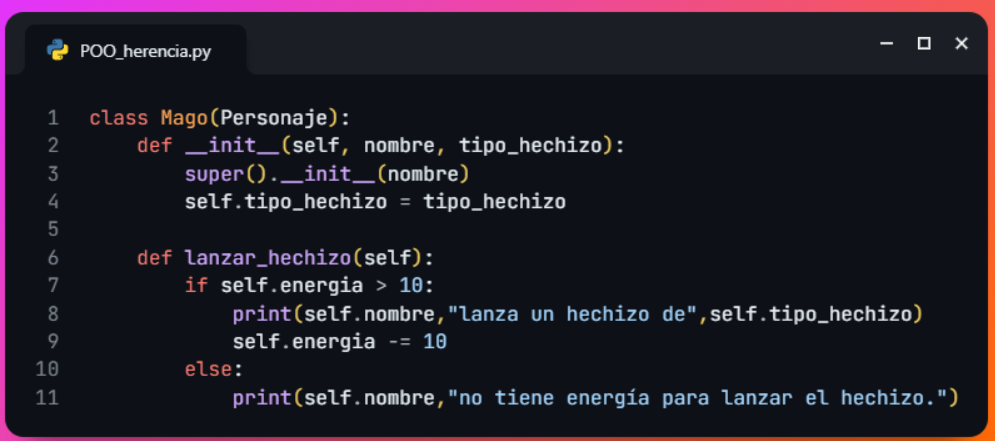
Lenguajes visuales
Los lenguajes visuales usan imágenes, bloques o formas en lugar de texto escrito. En vez de teclear código, construimos programas juntando piezas que encajan entre sí, como si fuera un puzle o bloques de construcción.
Arrastramos y soltamos bloques que representan diferentes acciones. Los bloques están diseñados para encajar solo donde tienen sentido, ayudándonos a evitar errores.
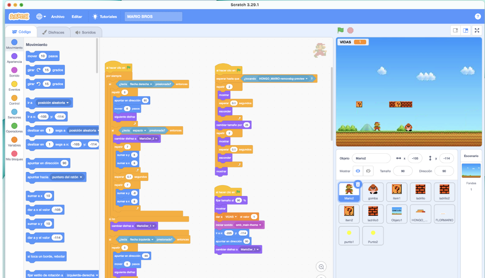
Los lenguajes visuales son muy útiles, especialmente cuando estamos aprendiendo a programar. Veamos por qué:
| VENTAJAS | INCONVENIENTES |
|
|
¿Qué es Scratch?
Scratch es un lenguaje de programación visual creado por el Instituto de Tecnología de Massachusetts (MIT) y especialmente diseñado para que todo el mundo pueda iniciarse en el mundo de la programación. Con el lenguaje de programación Scratch y su comunidad en línea puedes crear tus propias historias interactivas, juegos y animaciones, así como compartir tus creaciones con todo el mundo. Cuando los jóvenes crean y comparten proyectos de Scratch, aprenden a pensar de forma creativa, a razonar sistemáticamente y a trabajar colaborativamente con los bloques de código del programa.
Cardia dice ¿Quieres saber más sobre la historia de Scratch?
¿Cuándo se creó?
Scratch aparece en 2007. Fue considerado en ese momento como una herramienta que permitía hacer “animaciones fáciles a base de bloques de código”. La codificación basada en bloques utiliza un entorno de aprendizaje de arrastrar y soltar, donde los programadores usan "bloques" de instrucción. Es una actividad simple, donde se puede obtener una base en el pensamiento computacional a través de elementos visuales en lugar de la codificación basada en texto.
Scratch, tiene como objetivo hacer la programación accesible a cualquier persona, por medio de un código basado en bloques, que realizan determinadas instrucciones.
Creadores
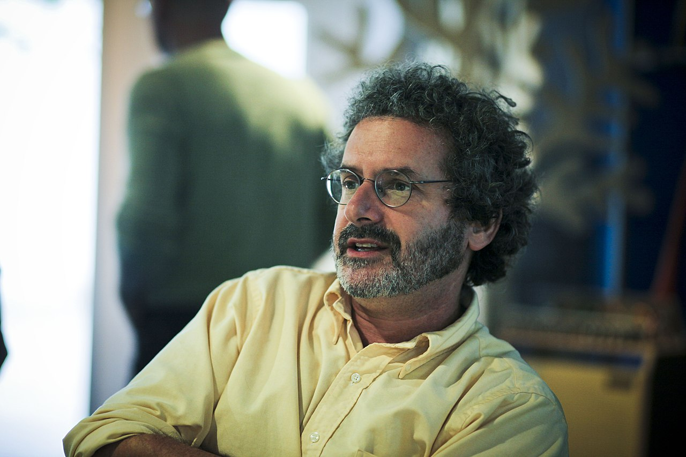
Fue un proyecto desarrollado por varios investigadores entre los que estaba Nael Gershenfeld, quien dijo: "Cuando la gente puede crear su propia tecnología es cuando se despierta la pasión".
Otro de los responsables fue Mitchel Resnick, quien declaró que esta aplicación está elaborada con fines educativos: "Queremos que las niñas y niños sean los creadores. Queremos que hagan cosas interesantes y dinámicas en el ordenador".
Comunidad Scratch
Vamos a visualizar este vídeo, para conocer la comunidad Scratch.
La comunicación digital es importante actualmente debido a su sencillez que permite transmitir y compartir mensajes de manera mucho más rápida. Podemos hablar de que la comunicación digital existe en: La comunicación, por medio de diálogos. Es una experiencia importante y necesaria para el pensamiento computacional del alumnado.
Interfaz
Revisa la web de Scratch viendo los diferentes apartados que tiene.
Lectura facilitada
Scratch fue creado en la universidad de Massachusetts Instituto of Tecnology (MIT).
Nael Gershenfeld dijo: "Cuando la gente puede crear su propia tecnología es cuando se despierta la pasión".
Mitchel Resnick declaró: "Queremos que los niños sean los creadores. Queremos que hagan cosas interesantes y dinámicas en el ordenador".
La comunicación digital es importante debido a su sencillez que permite transmitir y compartir mensajes de manera mucho más rápida.
La comunicación, por medio de diálogos. Es una experiencia importante y necesaria para el pensamiento computacional del alumno y alumna.
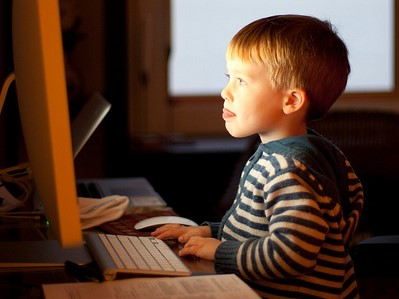
Realizar actividades con el ordenador.
Ejemplo:
El alumno realiza un dinámico programa con el ordenador.
Vamos a darnos de alta en Scratch
Scratch te permite crear y ver proyectos sin necesidad de tener una cuenta. Pero si te creas una cuenta podrás guardar y compartir los proyectos, escribir comentarios y publicar en el foro, y también para participar en otras actividades "sociales" en la comunidad (como "amar" otros proyectos).
¿Cómo creo una cuenta?
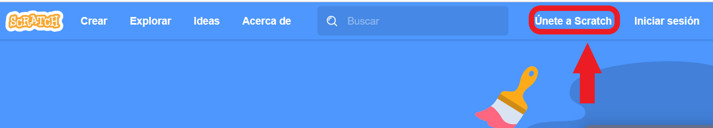
Simplemente haz clic en "Únete" en la página principal de Scratch. Tendrás que responder a algunas preguntas y dar una dirección de email. Tan solo te llevará unos minutos, es completamente gratuito!
Después de registrarte en Scratch, recibirás un correo electrónico con un enlace. Simplemente haz clic en el enlace para confirmar tu cuenta. Una vez la confirmes, podrás compartir proyectos, escribir comentarios y crear.
¿Qué datos compartimos?
En el proceso de alta, debemos utilizar un nombre de usuario y varios datos personales. Se trabajará en pareja y se reflexionará dando argumentos a favor y en contra de las siguientes preguntas.
¿Por qué debes utilizar un seudónimo?
¿Por qué debes utilizar tu fecha de nacimiento?
¿Cuál es el motivo por el que es necesario utilizar una cuenta de correo electrónico válida?
¿Qué cuenta de correo debemos usar?
¿Necesitas ayuda sobre los datos a compartir?
Si necesitas ayuda para realizarlo, consulta la Guía de Competencia Digital en su apartado de Seguridad y subapartado de Protección de datos personales
O pregunta a tu profesor o profesora.
Revisa las partes del entorno de programación
Pon en común con tu grupo cuáles son las partes de la pantalla del entorno de programación. Abre el programa Scratch en una nueva pestaña, en paralelo a la actual.
- Fíjate en los diferentes menús del entorno de Scratch.
- Observa los botones de la izquierda y su estructura con diferentes colores.
- Rastrea el resto del escritorio...
¡Vamos a comprobarlo! Cuando terminéis de decir las partes en las que se divide la pantalla, identifica pulsando en la siguiente imagen interactiva para comprobar si habéis acertado.
Los bloques que vamos a usar
Vamos a conocer los diferentes bloques con los que construiremos el código de nuestro programa en Scratch.
Movimiento
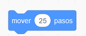
Estos bloques sirven para colocar el objeto en una posición del fondo y darle movimiento, giro, Ir a x - y, deslizarse a una posición, apuntar a una dirección, entre otros.Este bloque desplaza el objeto 25 pasos. Los pasos se corresponden con píxeles.
Apariencia
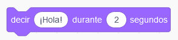
Estos bloques permiten cambiar el aspecto de los objetos (colores, disfraz, ocultarlos, mostrarlos, e incluso modificar su tamaño), de esta forma se simula que los personajes realicen movimientos, insertando pensamientos y textos a modo de bocadillos con los que los personajes hablan.Este bloque permite que aparezca sobre el objeto un bocadillo con el mensaje que se escriba durante los segundos indicados.
Este ejemplo sirve para decir ¡Hola! durante 2 segundos.
Sonido
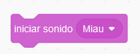
Estos bloques insertan sonidos predefinidos, de internet o los que se puedan grabar en la computadora. Tenemos los siguientes tipos de bloques de sonidos: Tocar sonido hasta que termine, detener todos los sonidos, cambiar volumen, fijar volumen, entre otros.Este bloque inicia un sonido predeterminado.
Este ejemplo sirve para iniciar un sonido "Miau"
Eventos
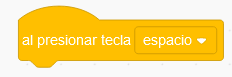
Estos bloques sirven para reaccionar con el programa o los objetos. El usuario puede tener interacción con ellos (pulsando en la bandera, pulsando una tecla) o pueden ser los propios objetos los que se relacionen entre sí (enviando mensajes, tocándose entre ellos, etc.). El envío y recepción de mensajes sirve para interactuar entre los diferentes elementos situados en diferentes lugares.Este bloque se utiliza para comenzar la acción cuando se presiona la tecla espacio.
Este ejemplo sirve para que, al presionar la tecla espacio, se ejecute el programa.
Control
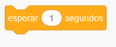
Estos bloques permiten repetir acciones en determinados casos, como son los bucles y los condicionales, también se pueden establecer tiempos de espera, detener todos los personajes y crear clones de los mismos.
Este bloque se utiliza para imponer una espera de tantos segundos.
Este ejemplo sirve para esperar "1" segundo, antes de ejecutar el siguiente bloque.
Sensores
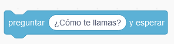
Estos bloques detectan cuando el objeto interactúa con el entorno. Son de los siguientes tipos: Tocando con algo, tocando el color, distancia a puntero del ratón, preguntar y esperar, respuesta, entre otros muchos.
Este bloque pregunta algo al usuario y espera una respuesta.
Este ejemplo interactúa al "preguntar ¿Cómo te llamas? y esperar" a que respondas por medio del teclado.
Texto a Voz
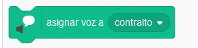
Estos bloques permiten asignar tonos de voces a los objetos. Para ver este tipo de bloques se debe asignar extensiones que en principio estan ocultas. Hay tres tipos de bloques: Decir "Hola", asignar voz a "varios tipos" y fijar idioma "español".
Este bloque determina un tono de voz al objeto.
Este ejemplo sirve para asigna voz a "contralto".
Cardia dice ¿Te apetece conocer algo más?
Explora cómo cambiar disfraces, sonidos, visualízalo.
Vamos a buscar en Scratch objetos con diversos disfraces, fondos adecuados, sonidos que sean interesantes para el proyecto, entre otros elementos.